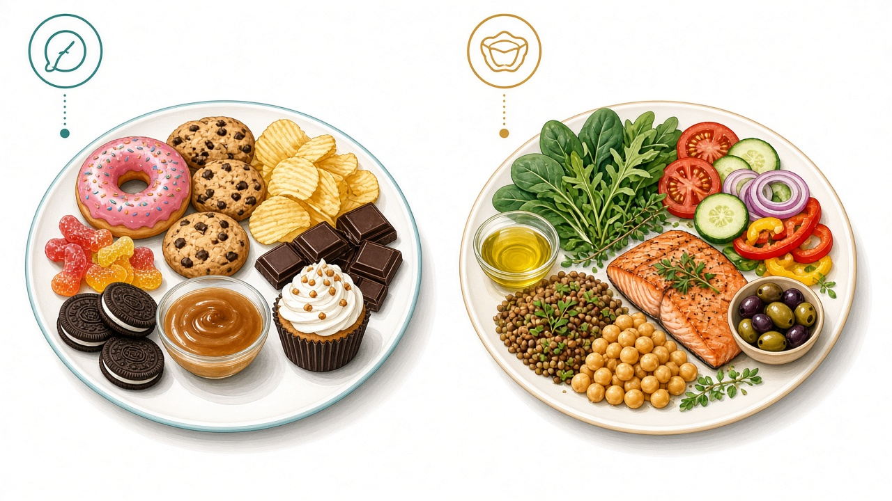
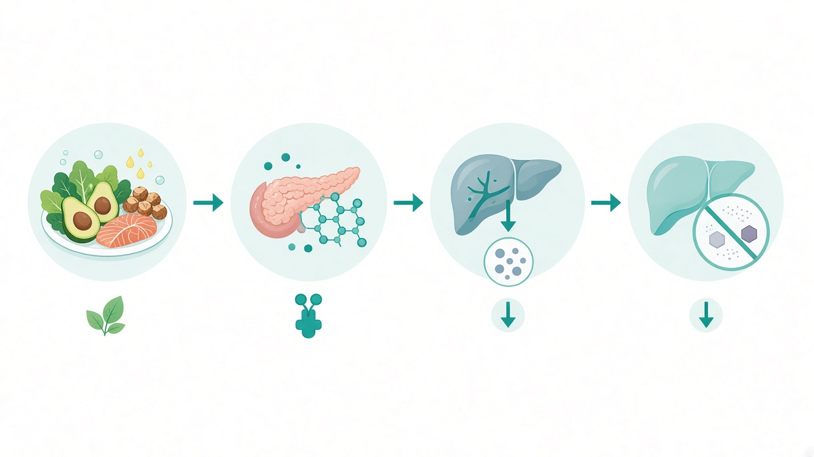

Alimentation et acromégalie
Le contenu de cette page (sélection d’études, focus cétogène / KetoAcro, conseils pratiques et vidéos) reflète une analyse personnelle fondée sur mon expérience de l’acromégalie et sur la lecture d’articles scientifiques. Ce n’est pas une recommandation médicale officielle.

L’alimentation ne soigne pas l’adénome hypophysaire. Elle peut en revanche limiter les complications métaboliques très fréquentes dans l’acromégalie (intolérance au glucose, diabète, hypertension, prise de poids) et influencer l’axe GH/IGF-1. Voici ce que disent les études, traduites en langage clair, avec une rubrique dédiée au régime cétogène et à l’essai KetoAcro (Erasmus MC, Rotterdam).
Pourquoi l’assiette compte
L’excès de GH et d’IGF-1 perturbe le métabolisme du sucre et des graisses. Beaucoup de patients développent une résistance à l’insuline ou un diabète. L’alimentation occidentale – riche en sucres rapides et en produits très « insulinotropes » – stimule en permanence l’insuline et l’IGF-1. Chez une personne déjà exposée à un excès de GH, cela peut amplifier le déséquilibre.
Les macronutriments n’ont pas le même effet : les protéines (surtout animales) tendent à soutenir l’IGF-1 ; une restriction glucidique importante peut le faire baisser via la baisse de l’insuline hépatique. Le traitement médical reste la base ; l’alimentation en est le complément.
Ce que disent les études
Nutrition, GH/IGF-1 et cancer
Fanti M., Longo V.D. – Endocrine-Related Cancer, 2024
L’alimentation et les cycles de restriction modulent l’axe GH → IGF-1. Moins de calories et une attention aux protéines font baisser l’IGF-1. Un IGF-1 élevé favorise la prolifération cellulaire ; une baisse temporaire protège les cellules saines dans certains modèles de recherche.
Pour le patient : l’assiette influence le « volume » de l’IGF-1. L’objectif n’est pas de jeûner pour soigner l’acromégalie, mais de comprendre le lien.
Syndrome de Laron et alimentation occidentale
Melnik B.C. et al. – Nutrition & Metabolism, 2011
Les personnes atteintes du syndrome de Laron (résistance à la GH → IGF-1 très bas) ont une prévalence très faible de diabète et de cancer. L’alimentation occidentale (sucres rapides + produits laitiers très insulinotropes) stimule en permanence l’insuline et l’IGF-1.
Pour le patient : limiter les sucres rapides et les ultra-transformés aide à ne pas ajouter une stimulation permanente de cet axe.
Protéines, restriction calorique et IGF-1
Chez l’humain, la restriction calorique seule ne baisse pas toujours l’IGF-1 autant que chez le rongeur : il faut souvent une restriction protéique associée. À l’inverse, une hausse de l’apport protéique (surtout animal) tend à augmenter l’IGF-1. Les régimes cétogènes (très pauvres en glucides, riches en lipides) ont montré, dans une méta-analyse 2024, une baisse moyenne d’environ 20 % de l’IGF-1, avec aussi une baisse de l’insuline et de la glycémie à jeun – sans jeûne obligatoire.
Méta-analyse régimes cétogènes et IGF-1 (PubMed)
Jeûne et sécrétion de GH (sujets sains vs acromégalie)
Ho P.J., Barkan A.L. et al. – J Clin Endocrinol Metab, 1992
Chez le sujet sain, le jeûne fait chuter l’IGF-1 et augmente paradoxalement la GH. En acromégalie, la réponse est souvent différente : la fréquence des pics de GH ne change pas comme attendu. Le jeûne prolongé n’est donc pas un outil de traitement de l’acromégalie.
Complications métaboliques de l’acromégalie
Chanson P., Salenave S. – Orphanet J Rare Dis, 2008
Intolérance au glucose, diabète, hypertension et troubles lipidiques sont fréquents. L’alimentation est un levier majeur pour ces complications, pas pour la tumeur elle-même.
Régime cétogène et acromégalie – focus KetoAcro

L’idée derrière le régime cétogène
Un régime cétogène très pauvre en glucides (souvent 30–40 g/jour au départ) induit une cétose nutritionnelle. La baisse de l’insuline qui en résulte diminue l’expression des récepteurs de la GH au niveau du foie et réduit la synthèse d’IGF-1 – sans forcément faire monter la GH lorsque le patient est déjà sous analogues de la somatostatine.
La preuve de concept (Erasmus MC, 2020)
Une étude courte publiée dans le New England Journal of Medicine a suivi 11 patients acromégales sous analogues de la somatostatine, pendant 2 semaines de régime cétogène eucalorique (environ 35 g de glucides/jour).
- L’IGF-1 a baissé de façon significative
- Il s’est normalisé chez 10 patients sur 11
- La GH n’a pas augmenté en parallèle
- Plusieurs participants se sont sentis mieux ; certains ont pu réduire (sous contrôle médical) leurs analogues
C’était une étude pilote, courte et de petite taille – d’où la nécessité d’un essai plus large.
NEJM – lettre (preuve de concept)
L’essai en cours : KetoAcro (Erasmus MC Rotterdam)
KetoAcro (NCT06949891) est un essai randomisé contrôlé mené à l’Erasmus Medical Center (Rotterdam), avec collaboration du LUMC. Objectif principal : mesurer l’effet d’un régime cétogène eucalorique de 6 mois sur l’IGF-1 chez des adultes atteints d’acromégalie active, sous dose stable de médicaments depuis au moins 4 mois.
- Bras expérimental : 3 mois à 30–40 g de glucides/jour, puis 3 mois à 50–60 g/jour
- Bras contrôle : régime méditerranéen / recommandations nationales de bonne alimentation (également eucalorique)
- Environ 60 participants prévus ; un sous-groupe pilote sous pegvisomant
- Début effectif : 2023 – fin estimée des inclusions / suivi : 2027–2028
- Investigatrice coordinatrice : Kirsten A. Berk, RD, PhD (diététique / médecine interne)
L’hypothèse : un régime cétogène prolongé, bien encadré, pourrait améliorer la biochimie (IGF-1), les symptômes et la qualité de vie, tout en aidant sur la résistance à l’insuline et l’intolérance au glucose – fréquentes en acromégalie.
ClinicalTrials.gov – KETOACRO · NVE – présentation de l’étude
Conseils pratiques (à adapter avec votre équipe)
- Sucres et index glycémique : privilégier légumes, légumineuses, céréales complètes, fruits peu sucrés. Limiter sodas, confiseries et ultra-transformés.
- Protéines : apport de qualité (poisson, œufs, légumineuses, viandes maigres) pour la masse musculaire, sans excès inutiles – les protéines animales soutiennent davantage l’IGF-1.
- Produits laitiers : pas d’interdiction systématique ; modérer les formes très transformées si le bilan métabolique le justifie.
- Sel et graisses : réduire le sel (tension) ; favoriser huile d’olive, noix, avocat, poissons gras.
- Jeûne prolongé : non recommandé comme traitement de l’acromégalie.
- Régime cétogène : uniquement dans un cadre médical (idéalement type KetoAcro ou équivalent), jamais en automédication.
- Repas réguliers : des horaires stables aident souvent glycémie et énergie.
Objectifs réalistes
- Mieux contrôler la glycémie et limiter le risque de diabète
- Soutenir le contrôle de la tension et du poids
- Préserver la masse musculaire
- Compléter – et non remplacer – le traitement et le suivi endocrinien
Vidéos – chaîne SEQUOIA Santé
Sélection de vidéos sur le régime cétogène, le carnivore, le jeûne, le cholestérol, le diabète et le petit-déjeuner. Contenu externe à titre informatif – à croiser avec l’avis de votre équipe soignante, surtout en cas d’acromégalie.
Régime cétogène


Régime carnivore


Jeûne


Cholestérol & bilan lipidique